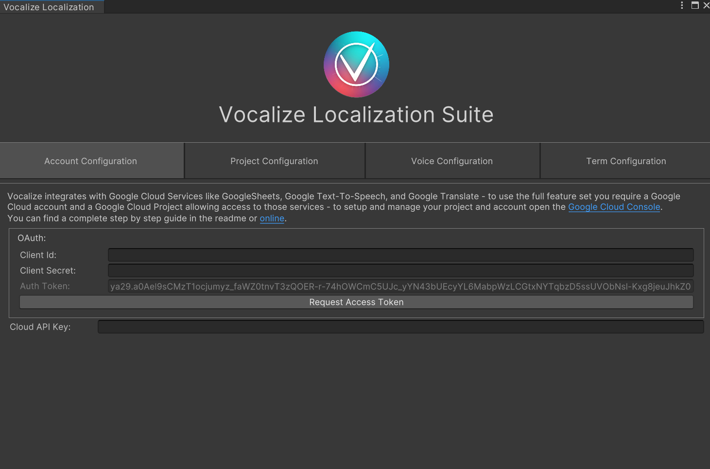

Welcome to the Vocalize Localization Setup Guide. Follow the steps below to set up localization for your Vocalize software.
Open the Google Cloud Console to start the setup of the Vocalize Google Integration - create an account if necessary
Press "Select a project" in the top bar to open the dialog to select or create a new project. Press 'New Project' in the top right of the popup. Name the project "Vocalize" or "Vocalize Localization" and select an organisation.
Press 'New Project' in the top right of the popup.
Name the project "Vocalize" or "Vocalize Localization" and select an organisation.
Open the Vocalize software and click on the "Settings" icon on the top right corner of the screen.
Open the Vocalize software and click on the "Settings" icon on the top right corner of the screen.
Open the Vocalize software and click on the "Settings" icon on the top right corner of the screen.
